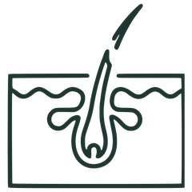

01
O DHT age
e afina seus fios

02
O folículo enfraquece
mas ainda está vivo
03
O tratamento bloqueia
e os fios podem voltar
 03O tratamento bloqueiae os fios podem voltar03O tratamento bloqueiae os fios podem voltar
03O tratamento bloqueiae os fios podem voltar03O tratamento bloqueiae os fios podem voltar